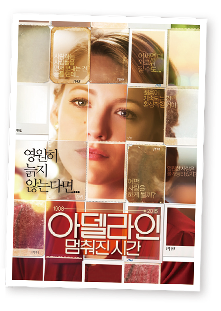

활동하기 영화를 통해 생각해 보는 ‘영원히 사는 삶’
 영화 「아델라인: 멈춰진 시간」의 주인공인 아델라인은 우연한 사고 이후 영원히 늙지 않는다. 세월이 흘러 그녀의 딸은 백발의 노인이 되었지만 그녀는 107세의 나이에도 여전히 29세의 젊은 모습을 간직하고 있다. 그렇게 그녀는 자신의 정체를 수상하게 여기는 사람들을 피해 10년마다 신분과 거주지를 바꾸며 살아가고 있다.
1 늙지 않는 아델라인의 삶이 어떨지 생각해 보고, 그렇게 생각한 까닭을 말 해 보자.
늙지 않고 계속 산다면 사랑하는 사람들과 계속 이별해야 하기 때문에 괴로울 것이다.
2 나에게 영원히 살 수 있는 기회가 주어진다면 어떤 선택을 할지 모둠원과 함께 이야기해 보자.
영원히 살고 싶지는 않을 것 같다. 사랑하는 가족, 친구들, 이웃들과 함께 늙어가며 살고 싶다.